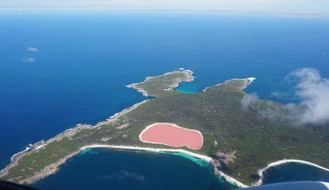

News
Affordable and Reliable Electrical Services in Perth
Advanced Commercial Lighting Solutions in Perth
Professional and Tidy Electrical Services
Planned and Unplanned Electrical Visits in Perth
More
In Effect Electrical: Safe, Clean, and Efficient
Expert Electrical Maintenance for Perth Homes and Offices
Keeping Your Business Powered and Productive
High-Quality Industrial Electrical Services in Perth
Perth’s Preferred Electrician for Business and Industry
About Us
Contact Us
In Effect Electrical Pty Ltd
Malaga: A Suburb with Historical Roots and Growing Development in Perth
Malaga, located 11 kilometers north of Perth's CBD, is a suburb in the City of Swan with a rich history of early real estate development. It has evolved over time, offering a glimpse into both the past and future of Western Australia’s urban growth.
Malaga's Rich History and Thriving Industrial Landscape in Perth
Malaga, a vibrant suburb in Perth, blends industrial growth with historical significance. From its name’s origins to its bustling business precinct, the suburb is home to numerous facilities and offers efficient transport options for its workforce and residents.
Western Australia: A Vast and Diverse Region with a Thriving Economy and Rich History
Western Australia (WA), the largest state in Australia, is a land of contrasts, with expansive deserts, tropical regions, and coastal areas. Its rich history, from Indigenous heritage to European exploration, and its booming mining industry, continue to shape its economic landscape.

A Deep Dive into the Rich History of Western Australia: From Ancient Beginnings to Federation
Western Australia's history spans from the formation of ancient landforms billions of years ago to European exploration and the establishment of the Swan River Colony, culminating in its federation as an Australian state in 1901.
Exploring the Unique Geography and Geology of Western Australia: A Land of Ancient Landscapes and Rich Biodiversity
Western Australia's vast geography, marked by ancient landforms and an extensive coastline, is defined by unique geological features and a challenging environment for agriculture, contributing to both natural beauty and environmental concerns.
Western Australia's Diverse Climate: From Mediterranean Coasts to Arid Interior and Tropical Heat
Western Australia’s climate is as diverse as its geography, ranging from Mediterranean conditions in the south to arid heat in the center and tropical monsoons in the north, with unique rainfall patterns and extreme temperature records.
Western Australia’s Rich and Diverse Flora and Fauna: A Sanctuary for Unique Species
Western Australia boasts an extraordinary array of flora and fauna, with over 630 bird species and 10,000 plant species, including endemic plants and animals found in diverse ecosystems ranging from tropical savannas to desert regions.
Western Australia’s Diverse Population: A Rich Tapestry of Cultures and Ancestries
Western Australia’s population has grown from early European settlement to a multicultural society today, with Perth hosting a majority of the state's population and a significant mix of ancestries including British, Italian, and Indigenous groups.
Language and Religion in Western Australia: A Snapshot of Diversity and Changing Trends
The 2021 census shows a shift in religious affiliations and language use in Western Australia, with English still predominant, but other languages and non-religious affiliations on the rise.
Western Australia’s Economy: Driven by Resources, Agriculture, and Expanding Industries
Western Australia's economy is fueled by its resource-driven industries, agricultural production, and growing sectors in finance, construction, and fishing, positioning it as a major player in Australia's overall economic performance.
Western Australia’s Government Structure: A Blend of Self-Government and Federal Oversight
Western Australia’s government operates under a bicameral parliament, with a rich history of self-government since 1890 and evolving relations with the federal government, all under the leadership of Premier Roger Cook.
Western Australia's Secessionist History: From Federation Reluctance to the 1933 Referendum
Secessionism has been a long-standing issue in Western Australia’s political history, peaking in 1933 with a referendum to leave the Commonwealth and return to the British Empire as an autonomous territory.
Western Australia’s Educational Landscape: A Blend of Public and Private Institutions
Western Australia boasts five universities, including prominent public institutions like the University of Western Australia, Curtin University, Edith Cowan University, and Murdoch University, along with the private University of Notre Dame Australia.
Western Australia’s Diverse Media Landscape: Newspapers, Television, and Radio
Western Australia offers a wide array of media outlets, including daily newspapers, broadcast television stations, digital channels, and a vibrant radio scene, providing comprehensive coverage of local, national, and international news.
Western Australia: A Hub for Arts, Culture, and Entertainment
From world-renowned performance institutions to iconic musicians and actors, Western Australia boasts a rich cultural landscape, with vibrant arts, theatre, and music scenes shaping the state’s identity.
Sporting Excellence and Wine Culture Thrive in Western Australia
Western Australia boasts a rich sports culture with top teams in AFL, cricket, basketball, and more. Additionally, its wine regions, like Margaret River and Swan Valley, produce some of Australia's finest wines.
Western Australia Strengthens Global Ties with Five Sister States
Western Australia fosters cultural and economic connections with five sister states: East Java, Hyōgo Prefecture, Andhra Pradesh, Tuscany, and Zhejiang. These partnerships enhance international collaboration and support mutual growth.